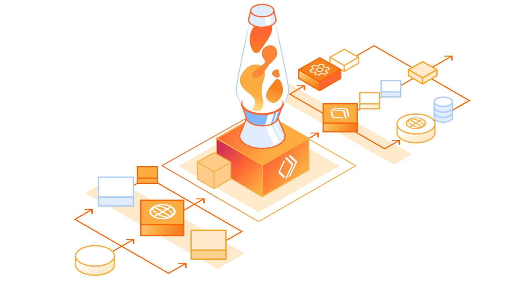

זאת לא פעם ראשונה, וזה עדיין לא נתפס - נחשפתי למערכת שהפכה את העבודה שלי לפשוטה יותר (בזכות ChatGPT כמובן) ולקח לי בדיוק רבע שעה מ
פורסם במקור ב LinkedIn
זאת לא פעם ראשונה, וזה עדיין לא נתפס - נחשפתי למערכת שהפכה את העבודה שלי לפשוטה יותר (בזכות ChatGPT כמובן) ולקח לי בדיוק רבע שעה מלהכיר אותה לראשונה למצב עבודה מלאה "בפרודקשן" 🫣
לפעמים יש משימה שנראית פשוטה, אבל בדרך אתה מבין שזה מסובך יותר משחשבת - חיפשתי דרך מאובטחת לטפל בקריאות API בלי להרים שרתים, ומנגד בלי לחשוף את ה-API KEY הפרטי שלי.
אני ממש לא אוהב להתעסק עם תשתיות.
אז חיפשתי פתרון מהיר וחינמי - והדבר הראשון שעשיתי זה להתייעץ עם מומחה בתחום - Chat GPT.
ואז הוא זרק לי שם: Cloudflare Workers.
הוא הציע עוד אלטרנטיבות, אבל המליץ עליהם כי יש להם תכנית חינמית די נדיבה. זה קנה אותי.
מעולם לא השתמשתי בזה, אבל תוך פחות משעה:
✅ הבנתי איך זה עובד
✅ התקנתי את הכלים ב-CLI
✅ כתבתי קוד שרץ בענן – בלי לנהל שרתים
✅ קיבלתי פתרון מאובטח, מקצועי, ורץ חינם!
💡 אז איך בפחות משעה הגעתי מלא להכיר את הכלי ל"שרת" עובד?
🎯 ChatGPT – סיפק את הרעיון וההסבר
🛠️ Cursor (IDE עם AI) – עשה התאמות לקוד ותיקן לי את הבאגים
☁️ Cloudflare – נתן לי תשתית חינמית
תוך שעה אחת, פתרון שבאופן רגיל היה דורש ימים של חיפושים, ניסוי וטעייה - פשוט עבד.
💥 אז למה כ"כ התלהבתי?
כי הבנתי שזה לא דורש ממך להיות מומחה לכל תחום!
אם אתה מפתח פרונטאנד - פתאום יש לך יכולת לבנות API מאובטח.
אם אתה מפתח בקאנד - אתה יכול לחבר UI ולפרוס דברים בקלות.
בלי באמת לשבת לחקור וללמוד DevOps, בלי להתעסק עם הגדרות מורכבות - פשוט לסמוך על המכונה שתכתוב את הקוד ולראות את הקסם קורה.
יש פה שינוי דרמטי בדרך שבה אנשי פיתוח עובדים - במקום ללמוד דוקומנטציות ארוכות, לעשות ניסויים, לטעות ולתקן, אנחנו מקבלים מוצר מוגמר ולומדים דרכו איך משתמשים בטכנולוגיה שלא הכרנו לפני - איך כותבים את הסקריפטים, ואיך מטמיעים אותה.
👀 טיפ שלי: אם עדיין לא שילבתם בינה מלאכותית כשאתם מתמודדים עם בעיות טכנולוגיות - זה הזמן להתחיל.
אני נתתי דוגמה אחת מוחשית, אבל הקונספט זהה לכל אתגר טכנולוגי שנתקלים בו לראשונה: האפשרות של למידה מתוך קוד מוכן שיוצר עבורך, ו-Reverse engineering לתוצר המוגמר
זה לא רק מייעל את העבודה, זה משדרג אותך כמפתח ופותח אפשרויות שפעם היו מחוץ להישג ידך מפאת חוסר זמן או הפחד מלהכשל במשימה.
